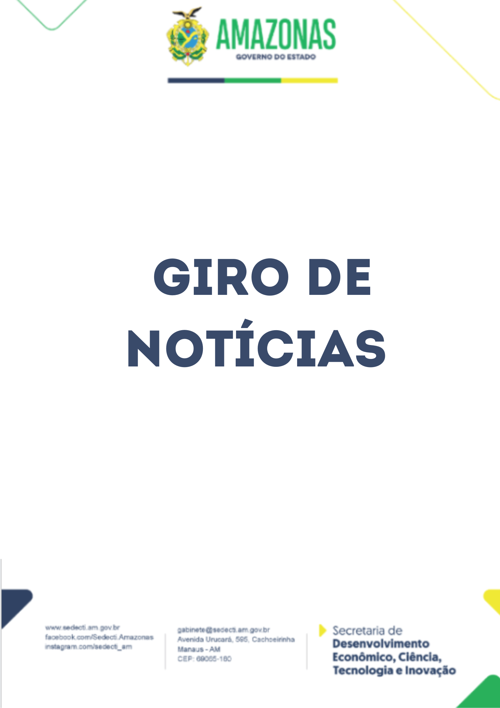

Ready to Innovate
Assessoria de Comunicação
Com foco principal na Assessoria de Comunicação, trabalhando desde a atuação, à elaboração e o desenvolvimento da comunicação empresarial/institucional. Estou pronto para transformar sua comunicação em uma ponte sólida com seu público.
About Me
✨ Comunicação pública com clareza e compromisso ✨
Prazer, sou Ângelo Vinícius
A comunicação me move desde sempre, pois essa curiosidade me levou a atuar na assessoria de comunicação da Sedecti, onde transformo dados concretos em resultados, seja promovendo redes sociais ou fortalecendo a comunicação institucional.


Notícias
Esta seção reúne matérias, coberturas e projetos jornalísticos desenvolvidos ao longo da minha atuação profissional. Relatos que destacam ações estratégicas, inovação e iniciativas que transformam realidades.
Contact Me
Tem alguma dúvida? Envie-me uma mensagem e vamos conversar.
Angelo Vinicius